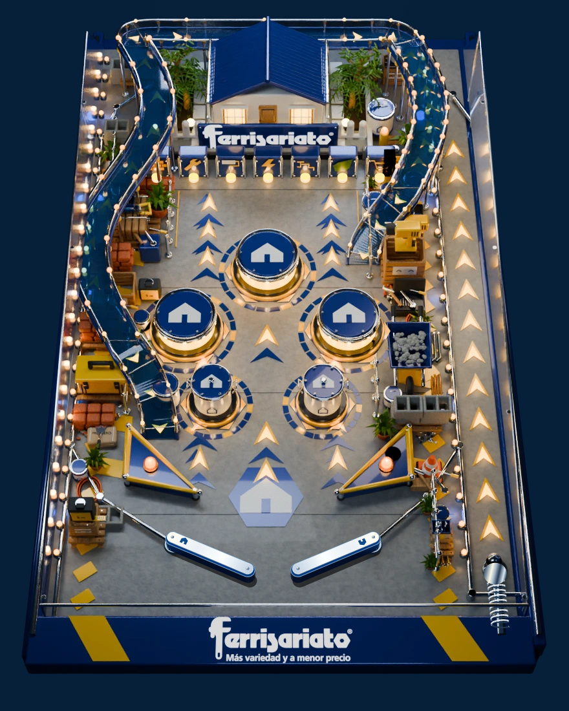
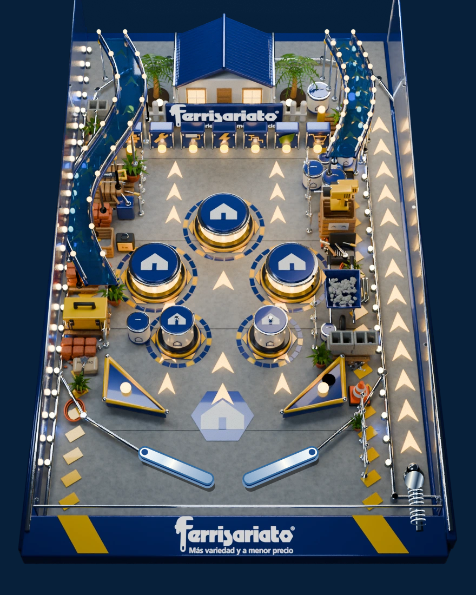

FERRISARIATO / PINBALLLa misma mesa.
Continuidad, detalle y ensamblaje.
Desliza para comparar la versión funcional anterior y la nueva versión, con la misma cámara y los mecanismos en reposo. Ambas imágenes proceden del juego real.


ANTESDESPUÉS4.645objetos en la escena272luces físicas7/7archivos funcionales idénticos25 + 12pruebas físicas y de navegador
El vidrio de la versión jugable utiliza una capa de reflexión de lámina delgada. La bola usa acero renderizado en Cycles; sus reflejos no se recalculan mediante ray tracing durante la partida. Física, cámara y controles conservados.